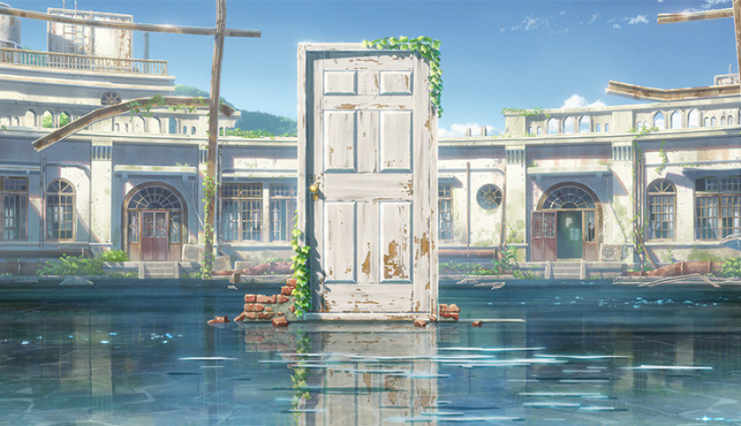
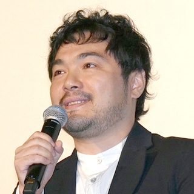

原作・脚本・監督

1937年生まれ、長野県出身。2002年、個人製作の短編作品
『ほしのこえ』で商業デビュー。
その後『雲のむこう、約束の場所』(04年)
『秒速５センチメートル』(07年)『星を追う子ども』(11年)
『言の葉の庭』(13年)を 発表。
2016年『君の名は。』は社会現象を巻き起こす大ヒットとなり、
2019年公開の『天気の子』も同年の
国内興行収入1位を記録するなど、
国内外から高い評価と注目を集めている。
『君の名は。』2016年8月26日公開
お互いを知らない東京に暮らす少年と、山奥に暮らす少女の夢を通じた出会いの物語で、
声の出演は主人公・立花瀧やくに神木隆之介、ヒロイン・宮水三葉役に上白石萌音。最終興行収入は
203.03億円で、日本歴代映画3位を記録する。第40回日本アカデミー賞においては、
アニメーション作品として初となる最優秀脚本賞を受賞。音楽・PADWIMPS、
キャラクターデザイン・田中将賀との強力なタッグは、次作、今作にも引き継がれている。
『天気の子』2019年７月9日公開
天気の調和が狂っていく時代に、運命に翻弄されながらも自らの
生き方を選択しようとする少年少女の姿を描く。声の出演は、離島
から東京に家出して来た少年・森嶋帆高に醍醐虎汰郎、彼が都会の
片隅で出会う不思議な能力を持つ少女・天野陽菜に森七奈。
2020年の第43回日本アカデミー賞において、最優秀アニメーション
作品賞と最優秀音楽賞を受賞した。
キャラクターデザイン
田中将賀Masayoshi Tanaka
1976年生まれ、広島県出身。アートランドを経て現在はフリー。
新海誠監督とはＺ会のCM作品「クロスロード」で初タッグを組み、
『君の名は。』（16年）、『天気の子』（19年）のキャラクターデザインを務めた。
美術監督
丹治匠Tanji Takumi
1974年生まれ、福島県出身。東京芸術大学美術学部絵画科卒業。
新海作品の代名詞である繊細な美術を黎明期から支えており、これまでに『秒速5センチメートル』（07年）
で美術を、『星を追う子ども』（11年）、『君の名は。』（16年）では美術監督を担当している。
作画監督
土屋堅一Kenichi Tsuchiya
1967年生まれ、神奈川県出身。スタジオあんなぷる、ウォルト・ディズニー・アニメーション・ジャパンを経て、アンサー・スタジオでメインアニメーター として活躍。これまでの主な作品に、『ティガームービー／プーさんの贈りもの』（00年）、『くまのプーさん ザ・ムービー／はじめまして、ランピー！』（05年）、 『ぷかぷかジュジュ』（12年）など。新海作品には、『星を追う子ども』（11年）で共同作画監督として初参加。『言の葉の庭』（13年）ではキャラクターデザイン・ 作画監督を担い、リアルな現代劇に挑戦した現場の絵作りを支えた。『君の名は。』（16年）でも作画監督陣の一角を担った。
2022©︎すずめの戸締り制作委員会
TH / CG12D203 / 07 / 金子桃花